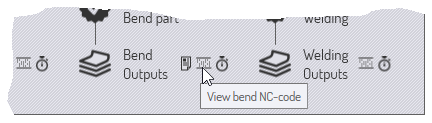

Flujo de trabajo de piezas
Dado que TecZone Bend tiene muchos módulos integrados, a menudo hay múltiples rutas por las que pueden moverse los datos de las piezas.
Ejemplo 1: cuando carga datos de piezas planas (de un archivo de geometría o un archivo DXF), puede optar por
-
Asignar útiles láser a la pieza, de modo que pueda colocarse en una chapa y cortarse junto con otras piezas.
-
Doblar la pieza a lo largo de las líneas de plegado para convertirla en una pieza 3D, de modo que pueda procesarse y calcularse una secuencia de plegado para una prensa plegadora.
Ejemplo 2: cuando importa un modelo de superficie 3D (desde un archivo IGES o STEP), puede optar por
-
Analizar las superficies y colocar útiles CAM láser de 5 ejes a lo largo de los orificios que deben cortarse.
-
Realizar el reconocimiento de características, convertir el modelo de superficie en un modelo de chapa metálica y desplegar este en un patrón plano para punzonarlo con una punzonadora.
El panel de flujo de trabajo

El panel Workflow es como un eje central desde el que puede dirigir todos estos movimientos. Cuando tenga una pieza abierta, siempre puede abrir el panel de flujo de trabajo pulsando W, o haciendo clic en el icono de flujo de trabajo de la barra de comandos de la izquierda. Exploremos el panel de flujo de trabajo; comience importando una pieza 2D con parámetro de plegado (un archivo de geometría, por ejemplo).En este punto, el panel de flujo de trabajo muestra lo siguiente:
-
Empezamos con Bend_28.geo, importado y limpiado para crear una pieza de chapa metálica en 2D (se muestran las dimensiones de la pieza)
-
A continuación, hay una bifurcación en el flujo de trabajo.
-
Podríamos asignar Laser Tech a la pieza (esto simplemente significa asignar recorridos de corte por láser a los contornos de la pieza).
-
Podríamos plegar la pieza plana en 3D (se detectan 9 plegados).
-
Expansión de nodos de flujo de trabajo: etapa 1
Haga clic en el icono Laser Tech para asignar mecanizado láser a la pieza. Verá que la pieza se analiza inmediatamente y se le añade el mecanizado láser. A continuación, haga clic en el icono Plegar a 3D para plegar la pieza plana en 3D. Después de estos pasos, así es como se ve el panel de flujo de trabajo:

Como muestran las anotaciones, hay diferentes tipos de nodos en el diagrama de flujo de trabajo.
-
Hay nodos de vista de pieza que representan los distintos tipos de mecanizado que se pueden realizar en la pieza. Al hacer clic en estos nodos, la pieza cambia a esa vista y el conjunto de operaciones disponibles en la pieza es representativo de esa vista. Por ejemplo, en la vista Pieza láser, puede ver y editar los útiles láser asignados a la pieza.
-
Puede cambiar entre estas vistas haciendo clic en estos iconos. Todas estas vistas de piezas también tienen teclas de acceso rápido, que se pueden ver simplemente colocando el cursor sobre uno de los iconos de vista. Aprenda estas teclas de acceso rápido para navegar rápidamente por el flujo de trabajo. Así que, al cabo de un tiempo, estará utilizando secuencias de teclas como W B Esc para abrir el panel de flujo de trabajo, cambiar a la vista de plegado y, a continuación, cerrar el panel de flujo de trabajo.
-
Los datos de las piezas se transfieren entre estos nodos mediante diversos procesos, que se representan en el panel de flujo de trabajo mediante iconos con forma de estrella de 13 puntas. Por ejemplo, se pasa de la vista de pieza 2D a la vista de pieza láser mediante el proceso Laser Tech (que analiza la pieza 2D y le asigna herramientas láser).Los procesos que haya completado tienen una marca de verificación dentro. Los procesos que aún no ha completado (pero que están disponibles) tienen una cruz en su interior. Puede hacer clic en estos nodos del proceso para completarlo.Resumamos lo que podemos ver en esta etapa del flujo de trabajo de nuestra pieza:
-
Ahora hay 3 vistas de piezas disponibles (la pieza en 2D, la pieza láser y el modelo en 3D, entre las que podemos cambiar).
-
Hay cuatro procesos adicionales disponibles:
-
Podríamos realizar un mecanizado de acabado de la pieza plana (esto genera un informe de pieza plana que sería útil para un operador de láser o punzonadora; normalmente incluiría los tiempos de corte por láser, la configuración de los útiles para las punzonadoras y otros requisitos especiales de útiles para esta pieza).
-
Podríamos hacer un Quick-Nest (es un nesting que contiene solo un tipo de pieza) y generar una chapa completa llena de esta pieza. Esto podría utilizarse para producir una chapa completa dedicada exclusivamente a esta pieza, o como ayuda para realizar una estimación rápida del coste o el tiempo necesarios para fabricarla.
-
Podríamos asignar Bend Tech (útiles para prensa plegadora) para la pieza.
-
Podríamos asignar Weld Tech (útiles de robot de soldadura) para la pieza.
-
Expansión de nodos de flujo de trabajo: etapa 2
Vamos más allá: haga clic en todos los nodos de proceso disponibles uno por uno y observe cómo se expande el panel de flujo de trabajo. Continúe hasta que no le queden más nodos. Así es como debería quedar después de estos procesos:

En este estado totalmente expandido, el panel de flujo de trabajo le permite cambiar fácilmente entre seis vistas diferentes de la pieza en varios módulos de procesamiento. También puede ver y transmitir o imprimir todos los distintos resultados generados por estos módulos. (Los resultados pueden ser informes, código NC o estudios de tiempo).
Navegación por el panel de flujo de trabajo
El panel de flujo de trabajo representa una gran cantidad de información y operaciones de forma compacta y gráfica. La mayor parte del tiempo, esto le servirá como centro de operaciones mientras trabaja con las piezas. Veamos más detenidamente algunos de los iconos del panel de flujo de trabajo para comprender cómo se pueden utilizar.
Nodos de proceso disponibles
Una estrella de 13 puntas con un signo + en su interior representa un paso del proceso que ya está disponible. Por ejemplo, podría ser el plegado de una pieza plana en 2D para convertirla en una pieza en 3D, o la asignación de útiles de tecnología láser. Pase el ratón por encima de dicho nodo para mostrar un tooltip explica lo que hará el nodo.

Esto sigue un patrón típico para muchos nodos de proceso disponibles. Al hacer clic en el nodo, se ejecutará el proceso con la configuración predeterminada. Al hacer clic en Ctrl+Click en el nodo, primero aparece una página de configuración y, después de revisar/editar la configuración, se lleva a cabo el proceso. Por ejemplo, esto es lo que aparece al hacer clic en Ctrl+Click en el nodo Quick-Nest:

Se muestran los ajustes de nesting rápido para que pueda editarlos antes de realizar el nesting.
Nodos de proceso completados
Una vez completado un proceso, el nodo cambia de nodo de proceso disponible a nodo de proceso completado; el símbolo se convierte en una estrella con una marca de verificación en su interior. En este punto, las opciones disponibles para ese nodo cambian.

Este es un conjunto típico de opciones disponibles en un nodo de proceso completado. Al hacer clic en el nodo, volverán a aparecer los ajustes del proceso, por lo que podrá modificarlos y volver a intentar el procesamiento. Por lo general, también hay una opción Ctrl+Click disponible para eliminar los datos del proceso. Si elige esta opción, se le preguntará antes de que se lleve a cabo la eliminación. Por ejemplo, esto es lo que sucede, cuando hace clic en Ctrl+Click en el nodo del modelo 3D para una pieza completamente procesada:

Comandos auxiliares
Muchos nodos tienen pequeños iconos cerca de ellos, proporcionando comandos auxiliares. Estos comandos proporcionan alguna funcionalidad que está relacionada con ese nodo. Estos son algunos ejemplos.
-
Los iconos auxiliares situados junto a cada nodo tecnológico suelen permitir seleccionar una máquina diferente y equiparla con los útiles adecuados.

-
El icono cerca del nodo Quick-nest le permite hacer nesting en un tamaño de chapa diferente.
-
Los iconos cerca de los nodos de salida le permiten ver las diversas salidas de un nodo de procesamiento (informes, programas de CN o estudios de tiempo).

Seguimiento de archivos de origen

La mayor parte del procesamiento TecZone Bend se inicia mediante la importación de datos CAD (ya sea 2D o 3D). Las piezas TecZone Bend fabricadas a partir de estos datos CAD pueden seguir realizando un seguimiento de estas piezas originales. Cuando se abre una pieza, TecZone Bend puede comprobar si el archivo CAD original a partir del cual se creó ha sido modificado entretanto. Si es así, la pieza ya está obsoleta y esto se puede ver en el panel de flujo de trabajo.
-
Puede elegir actualizar la pieza haciendo clic en el icono auxiliar de actualización de pieza situado cerca del nodo de la pieza de origen. TecZone Bend reimportará la geometría CAD y reconstruirá la pieza.
-
También puede optar por dejar de realizar el seguimiento de la geometría CAD original. Esto puede resultar útil, por ejemplo, si el archivo CAD original se encuentra en un medio de almacenamiento de datos removible o en una unidad remota a la que quizá no se pueda acceder en el futuro.Para ello, haga clic en el icono auxiliar de ruptura de enlace situado cerca del nodo de la pieza original. Esto hará que aparezca un mensaje para detener el seguimiento del archivo de origen:

Resumen
A continuación se ofrece un breve resumen de los principios del panel de flujo de trabajo.
-
El panel de flujo de trabajo muestra nodos que representan diversas vistas de piezas (como pieza láser, pieza de plegado) y nodos que representan diversos procesos (como plegar a 3D, asignar útiles láser).
-
Los nodos de proceso que están disponibles (aún no ejecutados) se representan como estrellas de 13 puntas con un signo en su interior. Los nodos del proceso que ya se han completado se representan con estrellas con una marca en su interior.
-
Al hacer clic en un nodo de proceso disponible, se invoca ese proceso con la configuración predeterminada. Al hacer clic en Ctrl+Click en los nodos de proceso disponibles, se abre un editor para editar primero la configuración del proceso y, a continuación, se invoca el proceso.
-
Al hacer clic en un nodo de proceso completado, puede ajustar la configuración del proceso y volver a aplicar el mecanizado. Al hacer clic en Ctrl+Click en un nodo de proceso completado, se eliminan los datos de mecanizado.
-
Los pequeños iconos auxiliares situados cerca de un nodo de proceso o de un nodo de vista parcial permiten modificar algunos parámetros importantes de ese nodo de proceso (como la máquina de destino o el tamaño de la chapa de nesting).